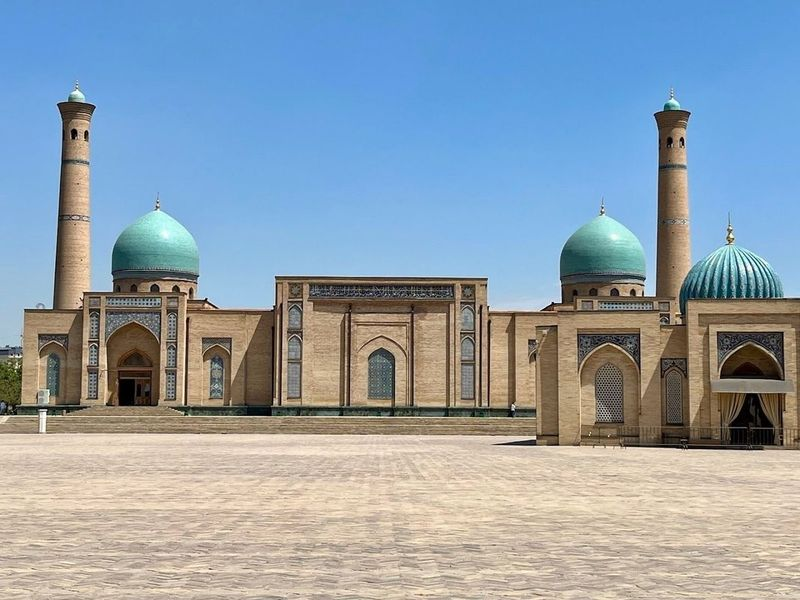
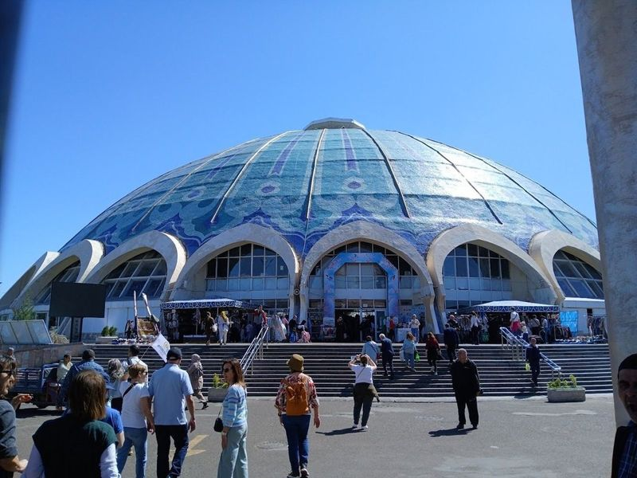
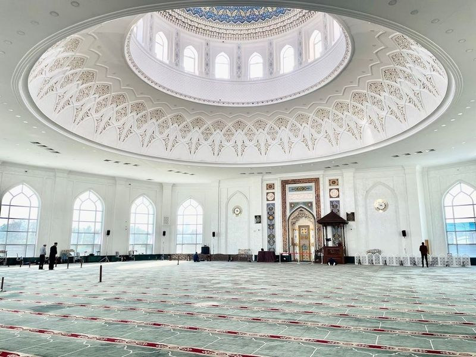
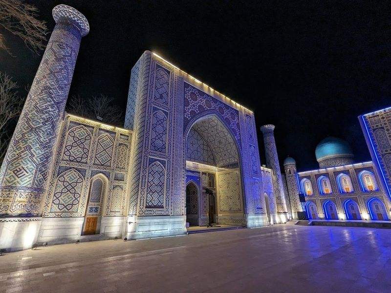
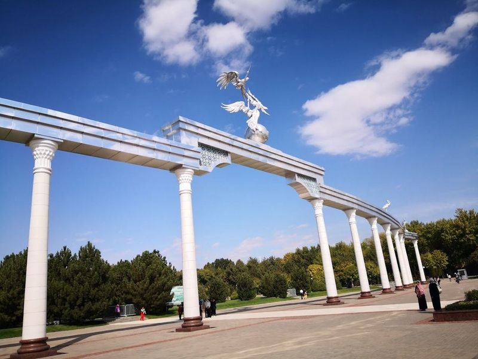
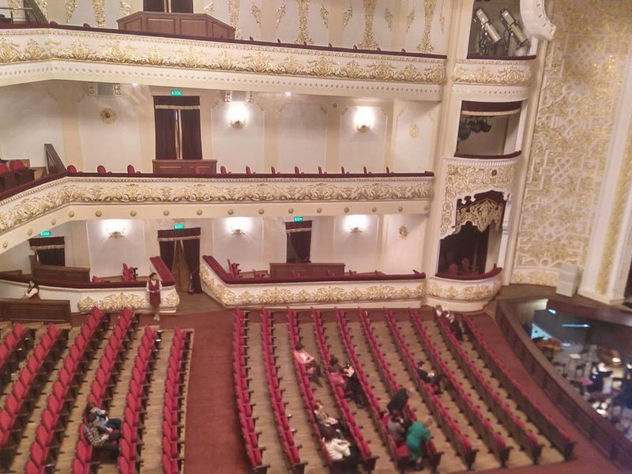
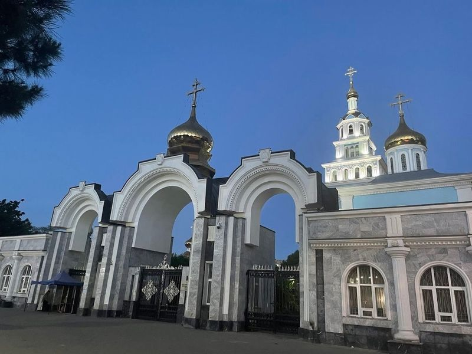
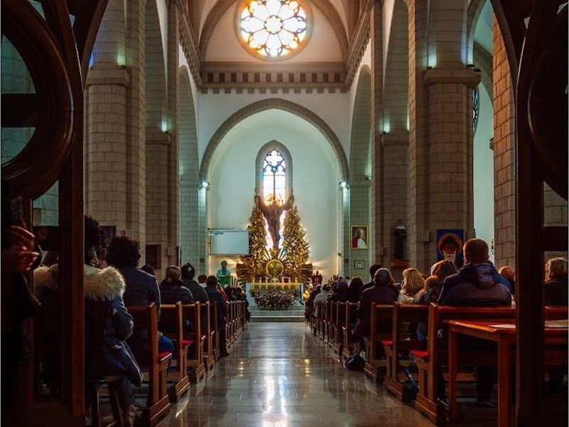
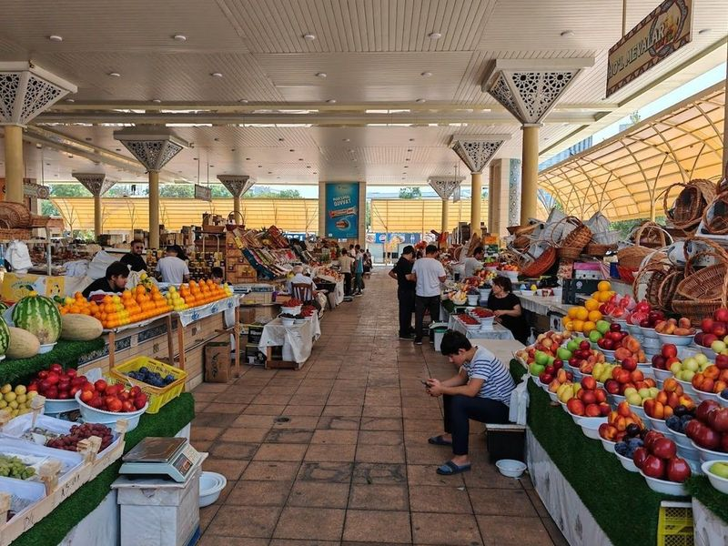
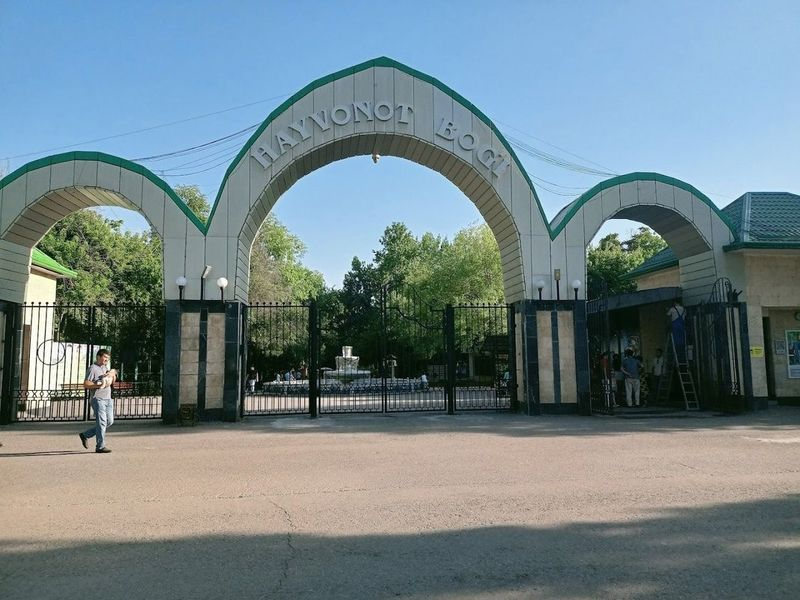

Explore Tashkent
A Brief History
Tashkent is an ancient Silk Road city destroyed by earthquake in 1966 and largely rebuilt in Soviet style with parks, metro stations, and administrative blocks. As capital of Uzbekistan since 1991, it preserves Timurid manuscripts in its libraries, mosques in the old quarter, and modern monuments to independence. The city links Fergana Valley agriculture with Central Asian trade and government.
Attractions Map
Top Sights & Activities

Hazrati Imam complex
Hazrati Imam Complex in Tashkent is a remarkable conglomerate of historically significant monuments, including the Muyi Muborak Madrassa, Barak Khan Madrassa, and Tillya Sheikh Mosque. Originally constructed in the 16th century as a tomb for one of the first imams of Tashkent, this complex has evolved over the centuries. Visitors can explore architectural wonders and a vast library housing one of the world's oldest Korans.

Chorsu Bozor
Chorsu Bazaar is a bustling and historic market in Tashkent, Uzbekistan. It is renowned for its vibrant atmosphere and diverse offerings, including local foods, souvenirs, clothing, and household items. The market's blue domes add to its charm. Established in the Middle Ages and expanded with 20th-century additions, Chorsu Bazaar remains a top destination for tourists seeking an authentic shopping experience and an opportunity to practice their bargaining skills.

Minor Mosque
The Minor Mosque is a modern architectural marvel in Tashkent, Uzbekistan. Constructed with traditional marble features, it boasts towering minarets and a striking turquoise dome. Despite its lack of historical heritage, the delicate interior decoration makes it a attraction. Opened in 2014 on the banks of the Ankhor canal, this grand mosque quickly gained recognition as one of Uzbekistan's significant spiritual centers.

Magic City Park
Magic City Park is a newly built theme park in Tashkent, Uzbekistan, resembling a fairytale castle and a fantasy town with colorful houses, cafes, and entertainment. It features replicas of famous monuments from around the world, including the Registan and Samarkand. The park offers free entry and hosts weekly firework displays. Visitors can enjoy a fountain show in a man-made pond and watch dancing acts facilitated by Pepsi Co.

Memorial Square
Memorial Square, located in Ankhor Park, is a favorite recreational spot for both locals and visitors in Tashkent. This monument serves as a memorial to Uzbek soldiers who lost their lives during World War II. The solemnity of the park is felt through the impressive statue of a mother gazing at an unquenchable flame and the traditional architectural style seen in wooden pillars.

Alisher Navoiy Theater
Alisher Navoiy Theater, a grand 1940s establishment, is known for staging opera, ballet, and symphony performances. The theater offers a mix of timeless plays and modern shows at the Academic Russian Drama Theater. With its neoclassical style, the theater provides affordable tickets for ballet and opera performances. Visitors have praised the National Ballet of Uzbekistan's performance as a representation of cultural values.

Holy Assumption Cathedral Church
The Holy Assumption Cathedral Church, located on Avlieota street in Tashkent, is a popular visitor spot with a rich history dating back to its establishment in 1945. The cathedral, built in 1871, serves as the seat of the Tashkent Diocese and is an impressive architectural landmark. Surrounded by a beautiful park, the complex offers peaceful walks amidst lush trees and houses a shop offering cosmetics and a cozy cafe for relaxation.

Roman Catholic Church of the Sacred Heart of Jesus
The Sacred Heart of Jesus Cathedral, a relatively new Gothic structure built in the early twentieth century, is a prominent landmark in Tashkent and has been declared a heritage site. The interiors with Gothic arches, buttresses, and spires provide an ethereal experience. Masses are held in English, Korean, Russian, and Polish on specific Sundays. The cathedral is well-maintained and offers a peaceful place for prayer.

Alay Bazaar
Alay Bazaar, also known as Oloy Market, is a historic market located in the heart of Tashkent. Established 150 years ago, it has been a central hub for trade and cultural exchange. While not as bustling as Chorsu Market, Alay Bazaar offers a more convenient and manageable shopping experience for both tourists and locals.

Tashkent Zoo
Established in 1924, Tashkent Zoo is a cultural, educational, and research institution that offers an enjoyable experience for families. The zoo houses a diverse range of animals from around the world, including fish, birds, and both freshwater and saltwater species in its aquarium. With its origins traced back to a small menagerie at an art museum, the zoo has expanded to meet modern standards.